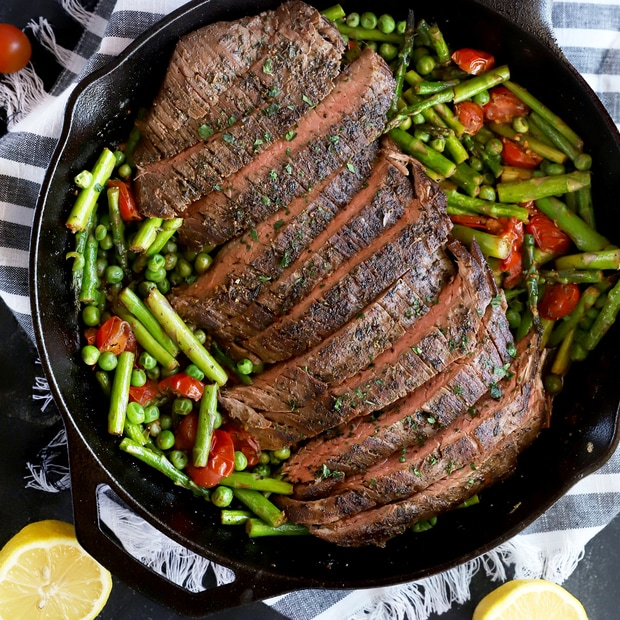

Steak with vegetables by Umaish
To be honest, I’m deeply in love with spicy food. But occasionally, I crave for a change – something less spicy yet delicious. That’s where this steak recipe comes in.
Apart from being low on spices, they are incredibly easier to prepare. You can just sit back and relax, and the oven will do all (well.. most) of the work for you.
I always add lots of veggies to my plate, that’s why you see both baked and steamed veggies here. But you could choose just one. It’s your choice.

What vegetables go with Steak?
Vegetable Side Dishes for Steak. The beauty of a steak dinner is that almost any veggie will work to round out dinner. Mushrooms are a natural partner. And you also can't go wrong with leafy greens, broccoli, Brussels sprouts, or a simple salad
Receipee to Follow
Heat the grill/pan to maximum, a cast iron ridged pan gives excellent results.
Place the steaks in a shallow dish, and place the prepared vegetables in a bowl.
Mix together the oil, salt, black pepper and balsamic vinegar. Pour half the mixture over the steaks and the remainder over the vegetables, mix well.
Place the steaks on the grill pan and cook for 2 minutes, then turn to sear the other side. Leave to cook for two minutes before turning again. Continue to cook, allowing a total of 3-6 minutes on each side, depending on how thick the steak is and how you like it cooked.
Remove to a plate and keep warm while you cook the vegetables.
Place the vegetables on the hot pan and cook for 4-5 minutes. Serve with jacket boiled
flavours to go with Steak
The following spices taste great with beef:
Cumin.
Cinnamon.
Dark chilis.
Red pepper flakes.
Cayenne pepper.
Curry powder.
Mustard powder.